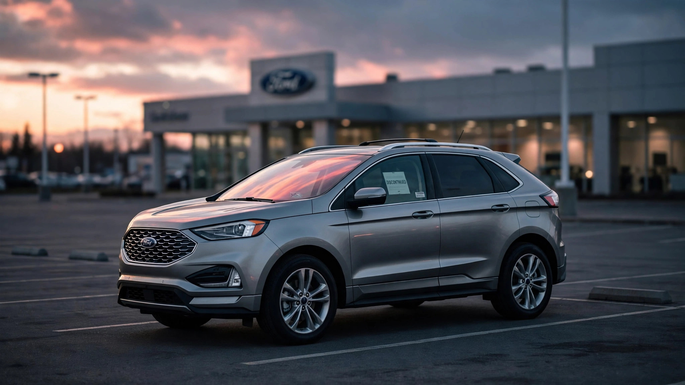

Ford Killed Its Safest Mainstream SUV. The One 3× Deadlier Lives On.

The last Ford Edge rolled off the line in Oakville, Ontario on April 26, 2024.[1] Ford spokesperson Jenn Banovetz confirmed it to The Car Connection in January of that year with a sentence so flat it could have been a form letter: “There will not be a 2025 Edge.”[2] Eighteen years of production, done. No farewell special edition and no commemorative package. Not even a press event in the parking lot where workers assembled the thing since 2007. Ford killed the Edge because it wasn’t selling fast enough, and Oakville needed to become something more lucrative: first an EV hub, then, after Ford rethought that plan entirely, an F-250 Super Duty factory.[3]
Standard product-lifecycle stuff. Except FARS tells a different story about what Ford chose to retire. Across 508 fatal-crash deaths, 1,091 crashes, and an estimated 875,000 registered vehicles, the Edge posted a death rate of 0.46 per 100 million vehicle miles traveled.[4] That made it the safest mainstream SUV Ford sold, by a wide margin.
Ford’s Explorer, which they continue to sell in volume, posts a 1.54 rate, while the Expedition clocks 2.31. Even the compact Escape, one size class smaller, manages 0.95, more than double the Edge.
| Ford SUV | Deaths | Rate | Impaired % |
|---|---|---|---|
| EcoSport | 86 | 0.14 | 19.1% |
| Edge † | 508 | 0.46 | 19.6% |
| Escape | 2,284 | 0.95 | 18.5% |
| Explorer | 3,797 | 1.54 | 19.5% |
| Excursion | 181 | 1.65 | 17.5% |
| Expedition | 1,515 | 2.31 | 20.0% |
† Discontinued 2024. EcoSport also discontinued; Bronco and Flex omitted for fleet-size clarity.
Read the impairment column carefully, because every Ford SUV sits between 17.5% and 20.0%. Nobody was driving the Edge more carefully than the Explorer. People behind both steering wheels looked essentially the same: suburban commuters, carpool parents, weekend road-trippers with a Costco habit and a moderate relationship with alcohol. Toxicology doesn’t lie about this, and at 19.6% impairment for the Edge and 19.5% for the Explorer, those profiles are statistically indistinguishable.[4]
So the 3.3× gap in death rate isn’t behavior. It’s physics.
Ford’s Explorer is a three-row body-on-frame-derived SUV that sits higher, weighs more, and carries a meaningfully higher center of gravity than the Edge’s two-row unibody crossover layout. That geometry shows up in the survivability data, where the Explorer’s deaths-per-crash ratio (0.573) runs 23% worse than the Edge’s (0.466). Put differently: when an Edge was involved in a fatal crash, its occupant survived more often than an Explorer occupant in the same situation. Not only less likely to end up in a fatal crash per mile driven, but also more protective when things went wrong.
Against its direct competitors (two-row midsize crossovers from other brands) the Edge held its own, sitting alongside the Subaru Outback (0.45) and Nissan Murano (0.43) in the middle of a class that ranges from the Mazda CX-5’s exceptional 0.12 to the Chevy Blazer’s 0.56. Not the safest in segment, but solidly above average, and far safer than any other Ford SUV you could walk into a showroom and buy.
And now you can’t buy it at all.
Ford left no direct replacement in the lineup. A shopper who wanted a two-row Ford crossover with the Edge’s interior space has exactly one path: step up to the Explorer.[3] With a death rate three-and-a-third times higher. Ford didn’t kill the Edge because it was dangerous; the data says the opposite. They killed it because Oakville’s square footage was worth more building Super Dutys. Production efficiency won. Occupant survival lost. And the FARS ledger on the vehicles Ford chose to keep selling suggests that distinction matters more than anyone in Dearborn acknowledged.
What This Means for You
If you’re shopping for a used midsize crossover, a 2019–2024 Ford Edge is now one of the better deals in the segment — both on price and on the fatal-crash data that nobody puts on the window sticker. Look for one with the Co-Pilot360 package, which bundled blind-spot detection and pre-collision assist on later model years. If you’re buying new and want to stay in the two-row crossover class, the Hyundai Santa Fe (0.39), Subaru Outback (0.45), and Mazda CX-5 (0.12) are all safer per mile than the Explorer that Ford would prefer you buy instead. Check your VIN against open recalls at nhtsa.gov/recalls regardless of what you drive.
Limitations
FARS captures only fatal crashes: the roughly 40,000 annual deaths, not the 6.7 million total crashes where occupants walk away. A vehicle with a low fatality rate could still have high injury rates that this data cannot measure. Our estimated death rates use VMT projections from NHTS fleet data, not actual odometer readings, which introduces ±15% uncertainty for lower-volume models. Also worth noting: the Edge’s FARS window spans the full 2007–2024 production run, meaning the data includes first-generation vehicles designed to older crash standards alongside the significantly updated 2015–2024 models.
The Strongest Counterargument
Ford is a business, and the Edge’s declining sales (from 130,000 annually at peak to under 80,000 before discontinuation) made it a poor candidate for continued investment, especially when Oakville could generate higher margins with the F-250 Super Duty. Explorers outsell Edges roughly two to one, meaning that even at a higher per-mile death rate, the Explorer generates vastly more revenue per fatality dollar. Ford did not build the Explorer to be dangerous, and its 1.54 rate, while high compared to the Edge, is moderate within the full-size SUV class. Honestly, the counterargument boils down to this: automakers don’t make discontinuation decisions using FARS death rates, and maybe they should, but expecting them to is naive. That’s probably true, and it doesn’t change the math for the family choosing between the Edge they can still find on a lot and the Explorer the salesperson is pushing instead.